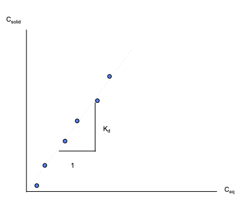

Adsorbtion#
Reactions between solutes and surfaces play an important role in various environmental and geological processes, particularly in the context of groundwater and subsurface systems. These reactions, often referred to as surface reactions or sorption processes, involve the interaction of solutes with the surfaces of solid materials, such as minerals, sediments, or aquifer grains. They can significantly influence the fate and transport of solutes in the subsurface environment.
For instance, in groundwater contamination scenarios, sorption processes can either attenuate or enhance the mobility of contaminants, depending on whether the reactions involve adsorption (binding of contaminants to surfaces) or desorption (release of contaminants from surfaces). These reactions can determine whether contaminants are retained within the subsurface, reducing their potential impact on groundwater quality, or if they are transported further, posing a greater risk to the environment.
Furthermore, surface reactions are crucial in natural processes such as the cycling of nutrients (e.g., phosphate or nitrate) within aquifer systems, affecting nutrient availability to ecosystems and influencing water quality.
Partitioning#
When water containing a constituient with concentration \(C_i\) equilibrates with the surrounding solid phase (porous media) the mass is said to be partitioned between the liquid (solute) and solid phase. A partition relationship is something like:
where:
\(C_{solid}\) is the equilibrium concentration of the constituient in/on the solid phase (e.g. units of mg/g)
\(C_i\) initial liquid phase concentration of the constituient
\(C_{eq}\) is the equilibrium liquid phase concentration
\(V_{solute}\) is the volume of solution (in the pore space of interest)
\(m_{solid}\) is the mass of the solid phase (in the porous space of interest)
A collection of these partitions for different equilibrium concentrations (all obtained at the same temperature) is called an isotherm.
Sorbtion Isotherms#
Sorbtion Isotherms are typically arrived at by some version of the cartoon below

Samples with a known water volume (or mass) and known concentration of solute are prepared. This concentration is \(C_0\)
Different masses of the same solids are added to each of the samples.
The jars are vigorously agitated for some time (usually 24 hours).
The concentration in each jar is measured. These concentrations are \(C_{eq}\)
The amount of mass that has transferred to the solid in the i-th sample is calculated from: \( mass_{\text{liquid-solid}} (i)= [C_0(i)-C_{eq}(i)] \cdot V_{\text{liquid}}\)
The solid phase concnetration is computed from: \(C_{solid} = mass_{\text{liquid-solid}} (i) / mass_{solid} (i)\)
The plot of \(C_{solid}\) versus \(C_{eq}\) is called the equilibrium adsorbtion isotherm.
If the procedure is done using different agitation time, then kinetic effects can be studied, and the resulting contour (surface) plot would be called a kinetic adsorbtion isotherm. Kinetic isotherms are probably uncommon.
Once the isotherm data are obtained then they are fit to one of several models for subsequent use.
Linear Isotherm#
If the data exhibits a straight-line relationship when plotted on arithmetic graph paper, then the isotherm is called a linear equilibrium isotherm.

If, in addition to the linear relationship, the system assumes new equilibrium conditions very fast relative to the transport processes involved, then the isotherm is called an instantaneous linear equilibrium isotherm.
The slope of the isotherm is called the distribution coefficient, \(K_d\).
The equation of the isotherm is: \(C_{solid} = K_d C_{eq}\)
Expressed as a rate equation: \( \frac{dC_{solid}}{dt} = K_d \frac{dC_{eq}}{dt}\)
Freundlich Isotherm#
If the data exhibits a straight-line relationship when plotted on log-log graph paper, then the isotherm is called a Freundlich Isotherm.

If, in addition to the log-log linear relationship, the system assumes new equilibrium conditions very fast relative to the transport processes involved, then the isotherm is called an instantaneous Freundlich equilibrium isotherm.
The slope of the isotherm is called Freundlich exponent, N, and the intercept is called the Freundlich distribution coefficient, K.
The equation of the isotherm is : \(C_{solid} = K C_{eq}^N\)
Expressed as a rate equation: \( \frac{dC_{solid}}{dt} = KN C_{eq}^{N-1} \frac{dC_{eq}}{dt}\)
Langmuir Isotherm#
If the data exhibits a straight-line relationship when \(\frac{C_{eq}}{C_{solid}}\) is plotted versus \(C_{eq}\) on arithmetic paper, then the isotherm is called a Langmuir Isotherm.

If, in addition to the linear relationship of \(\frac{C_{eq}}{C_{solid}}\) versus \(C_{eq}\), the system assumes new equilibrium conditions very fast relative to the transport processes involved, then the isotherm is called an instantaneous Langmuir equilibrium isotherm.
The equation of the isotherm is:
where \(\alpha\) is an adsorbtion constant related to binding energy and \(\beta\) is the maximum amount of solute that can be adsorbed.
To express as a rate equation rearrange as
Incorporation into ADE#
The adsorbtion/desorbtion reaction(s) are incorporated into the transport equation as a source/sink term:
If the linear isotherm applies, and the reaction is considered “fast” a simple substitution of the \(K_d\) gives
And renaming the term \(1 + \frac{\rho_b}{n} K_d = R\) (the retardation factor) the result is
Conceptually, the retardation factor (retardation coefficient) is a fundamental parameter in hydrogeology and groundwater transport modeling. It represents the ratio of the average groundwater velocity to the average solute velocity within an aquifer. More precisely, it quantifies how much slower a solute moves through the subsurface due to interactions with the solid materials (e.g., soil or rock) and the fluid (groundwater) in the aquifer.
The retardation factor is a critical concept when assessing the transport of contaminants in groundwater. When the retardation factor is greater than one, it indicates that the solute is retarded or delayed in its movement through the aquifer due to sorption or other reactive processes, reducing its mobility. On the other hand, when the retardation factor is less than one (colloids exhibit such behavior - its called hydrodynamic chromatography, it also occurs in low ionic strength solutions or with charged ions of same charge as the solid surface), it suggests that the solute moves more quickly than the groundwater, potentially increasing its transport distance.
Important
Understanding the retardation factor is essential for predicting the movement and dispersion of contaminants, designing effective groundwater remediation strategies, and assessing the risk of groundwater contamination. It plays a pivotal role in characterizing the complex interplay between solute transport and subsurface geochemistry.
Partioning of Organic Compounds#
Organic compounds partitioning is strongly influenced by the fraction of organic carbon in the solid phase as opposed to the total mass of solids themselves.
A working model for estimating partitioning is
where
\(K_d\) is a linear isotherm slope (i.e. we use the linear model)
\(f_{oc}\) is the fraction of organic carbon in the solid phase (A portion of the dried aquifer is burned at high temperatures (usually around 550°C) in a specialized instrument called a muffle furnace. During combustion, the organic carbon in the sample is oxidized and converted into carbon dioxide. The evolved CO2 is then captured and quantified using gas chromatography or infrared gas analyzers. The fraction of organic carbon in the soil can be determined by measuring the weight of the CO2 produced and applying stoichiometric relationships.
\(k_{oc}\) the organic-carbon partition coefficient, usually estimated from the \(k_{ow}\) octonal-water partition coefficient for the constituient of interest (in the 1990s it was obtained by liquid-liquid extractions, but less wasteful methods are likely in use today). Many compounds are tabulated Octanol-Water Partition Coefficients of Simple Organic Compounds (1988) NIST or one can use Table 7.2 in the textbook to make a good guess.
Volatization#
Volatization is another significant process in the fate of contaminants in groundwater. It refers to the escape or release of certain chemical compounds from the aqueous phase (groundwater) into the vapor phase (air) when there is an interface between the two. Volatization occurs predominantly with volatile organic compounds (VOCs), such as certain solvents and gasoline components, which have a tendency to evaporate. This process can lead to the migration of contaminants from groundwater into the air, posing risks to human health through inhalation exposure.
Structurally it is a lot like an adsorbtion (mass transfer) process. A working partition model is
where
\([C]_{aq}\) is the concentration in the aqueous phase of the volatile compound (intentionally shown as a molar concentration)
\(H_c\) is Henry’s law for the compound (kind of Raoult’s law extended throughout the domain
\(P_c\) is the partial pressure of the compound in the gas phase.
Henry’s Law is a fundamental principle that quantifies the relationship between the concentration of a volatile compound in the gas phase and its concentration in the water phase at equilibrium. It states that the concentration of a gas in the air is directly proportional to its concentration in the water and is governed by a proportionality constant called Henry’s constant. Henry’s Law is valuable in predicting the volatilization of contaminants from groundwater, as it helps estimate the extent to which a substance will partition into the vapor phase based on its solubility in water.
Note
Raoult’s law and Henry’s law are two fundamental principles in physical chemistry that describe the behavior of solutes in solutions, particularly when it comes to the interaction between solutes and the vapor phase. While these laws are similar in some respects, they apply to different phases of matter and have distinct applications.
Raoult’s Law:
Phase: Raoult’s law primarily applies to solutions of non-electrolyte solutes (molecules that do not ionize) in a liquid phase.
Description: Raoult’s law describes the vapor pressure of an ideal solution, where the partial vapor pressure of each component in the solution is directly proportional to its mole fraction in the liquid phase.
Mathematical Form: For a binary ideal solution, Raoult’s law is expressed as \(P_i = x_i * P_i^*\) , where \(P_i\) is the partial vapor pressure of component \(i\), \(x_i\) is the mole fraction of component \(i\) in the liquid phase, and \(P_i^*\) is the vapor pressure of pure component \(i\).
Application: Raoult’s law is often used to describe the behavior of volatile components in solutions, such as ideal gas mixtures and non-ideal solutions at low concentrations.
Henry’s Law:
Phase: Henry’s law applies to the interaction between a solute and the gas (vapor) phase, typically in cases where the solute has low solubility in the liquid phase.
Description: Henry’s law states that the concentration of a gas dissolved in a liquid is directly proportional to the partial pressure of that gas above the liquid. It describes the solubility of gases in a liquid.
Mathematical Form: Henry’s law is expressed as \([C] = \frac{1}{H_c} * P\), where \([C]\) is the concentration of the dissolved gas, \(H_c\) is Henry’s constant (specific to each solute-solvent pair), and \(P\) is the partial pressure of the gas in contact with the liquid.
Application: Henry’s law is commonly used in environmental chemistry, particularly in the context of predicting the dissolution and volatilization of gases in natural waters, such as the transfer of gases between the atmosphere and surface waters.
In summary, Raoult’s law pertains to ideal solutions of non-electrolyte solutes in the liquid phase and describes the vapor pressure of components in the solution, while Henry’s law pertains to the solubility of gases in a liquid and relates the concentration of a gas dissolved in the liquid to its partial pressure in the gas phase. Both laws deal with the interaction between solutes and gases but in different phases and under different conditions.